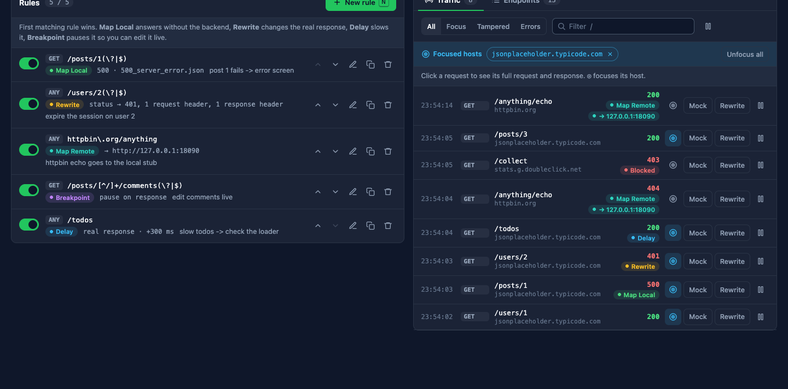
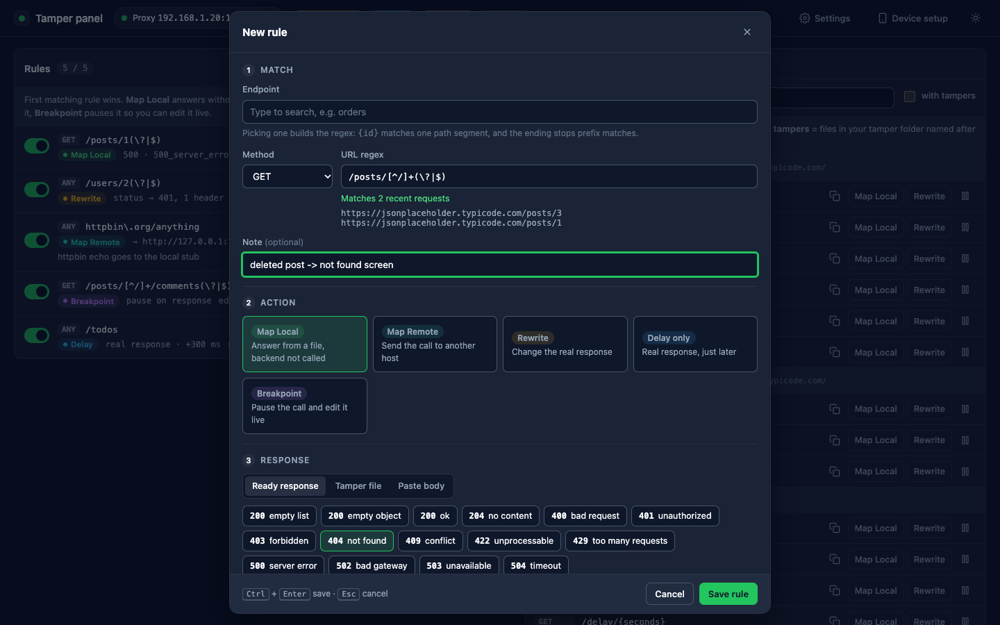
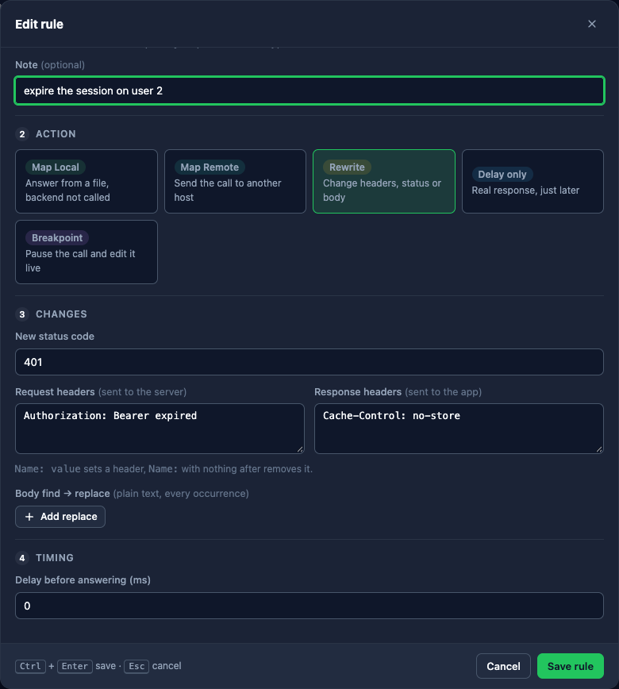
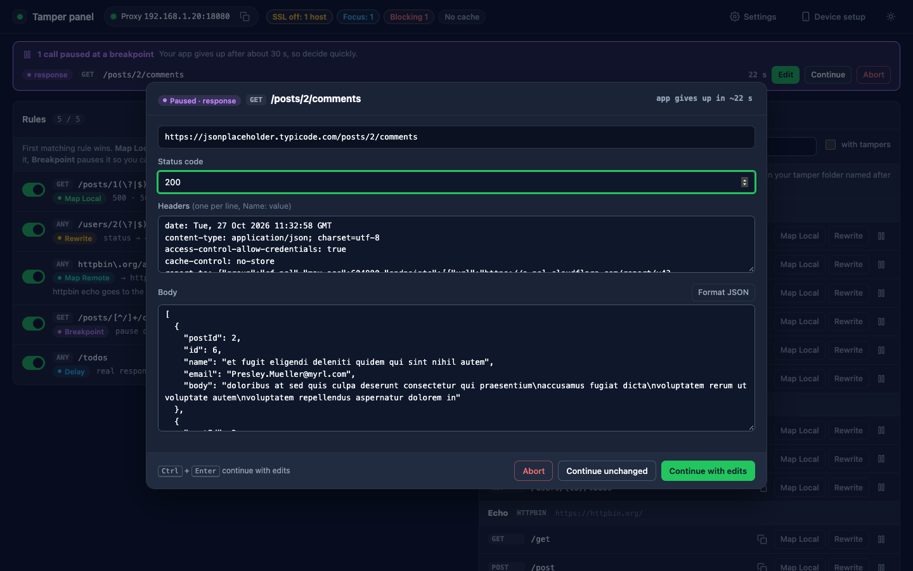
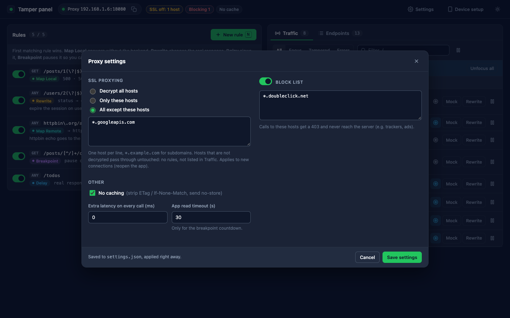
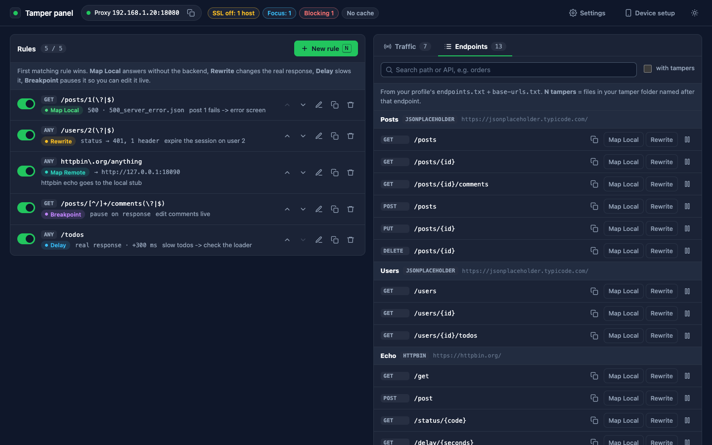

Open source · MIT · built on mitmproxy
tamper-proxy
A free alternative to Charles Proxy for mobile developers. Mock, rewrite, redirect, slow down or pause your app's HTTP(S) calls from a browser panel, on Android and iOS.
bash setup.shthen./proxy.sh
→ the panel opens in your browserWhy
Everything Charles does for app testing, without the license or the setup pain
What hurts with Charles
- Paid license per developer
- Setups live inside one app: hard to share a mock with a teammate
- Certificates and SSL settings redone on every machine
- Nothing a script or a CI job can drive
What tamper-proxy gives you
- Free and open source, runs locally (macOS / Linux)
- Every rule and setting is a plain JSON file: share it, keep it next to a ticket
- A browser panel: no desktop app to install
- The same files work from the terminal, a test script or an AI assistant
Coming from Charles
Same ideas, same names
| Charles | tamper-proxy |
|---|---|
| Map Local | Map Local rule: ready error bodies, your mock files, or a pasted body |
| Map Remote | Map Remote rule: same call, another host (path and query kept) |
| Rewrite | Rewrite rule: status, body, request headers and response headers |
| Breakpoints | Breakpoint rule: edit, continue, abort or answer live |
| Throttling | Global latency + per-rule Delay |
| SSL Proxying settings | Settings → SSL proxying: all / only these / all except these |
| Focus | ◎ on any request in the Traffic list |
| Block List · No Caching | Settings → Block list (403) · No caching |
The panel
Rules on the left, live traffic on the right
- Every call the app makes, tagged with what happened to it
- One click on a call: Mock, Rewrite or a breakpoint, pre-filled
- Inspect headers and body, Save response as mock
- Filters: Focus, Tampered, Errors · search · pause

Map Local
Answer from a file. The backend is never called.
- Ready response: 15 bodies included, from 200 / 204 to 401, 404, 429, 500, 503…
- Tamper file: search your own folder of mocks by name
- Paste body: saved into
mocks/for you - Status code, content type and a delay per rule

Rewrite
Change the real call, both ways
- Request headers before the call leaves (expired token, other language)
- Response headers the app receives (
Cache-Control, cookies) Name:with no value removes a header- New status code and find → replace in the body

More rules and settings
Redirect, slow down, block
Same call, another backend
Point one endpoint at staging or a local stub. Path and query are kept, unless the target sets its own path.
Check loaders and timeouts
A delay on one rule, or extra latency on every call from Settings.
Silence trackers and ads
Hosts on the Block list get a 403 and never reach the server.
Breakpoint
Pause a call and decide live
- On the request, the response, or both
- Edit status, headers, body → Continue
- Abort: the app gets a connection error
- Respond with a ready body, the server is never called
- A countdown shows how long until the app gives up

Focus · Settings
See only what matters
- ◎ on a request focuses its host; chips show what's focused, ✕ unfocuses
- SSL proxying: decrypt all, only some, or all except some hosts
- Block list, No caching, extra latency
- Saved to
settings.jsonand applied right away

Endpoints · profiles
Your API, ready to mock
- One folder per app:
endpoints.txt,base-urls.txt,mocks/, rules and settings - Base URLs per environment, one click to switch
- For each endpoint: the mock files you already have
- A sample ships in
profiles/example; your own profiles are never committed
./proxy.sh --profile profiles/my-app

Devices
Android and iOS, phone or emulator
./proxy.sh --adb; certificate from mitm.it./proxy.sh cert-emulator, proxy host 10.0.2.2mitm.it, then full trust./proxy.sh cert-ios-sim + --system-proxyGood to know
- The panel's Device setup shows the exact address per device
- Debug builds must trust user certificates and not pin (true for Charles too)
- Switch the device proxy off when you're done:
./proxy.sh clear-adb-proxy
Also from an AI assistant
The same two files, read by people and by assistants
SKILL.md/AGENTS.mdteach Claude, Copilot, Cursor… how to use it- The assistant edits
rules.json, the proxy reloads it, the panel shows it - Proof, not guesses:
logs/served.jsonlrecords every mocked, rewritten, redirected, delayed or blocked call - Everything still works by hand: the panel is the main way
// rules.json: the orders call fails [ { "note": "orders fail -> error screen", "url_regex": "/api/orders(\\?|$)", "methods": ["GET"], "action": "map_local", "local_file": "responses/500_server_error.json", "status_code": 500 } ] // logs/served.jsonl {"action": "map_local", "status": 500, "served": true, …}
Get started
Two commands
bash setup.shonce: a Python venv with mitmproxy./proxy.sh --profile profiles/exampleproxy on :8080, panel opens on 127.0.0.1:8082./proxy.sh --library ~/my-mockssearch your own mock folder from the editor./proxy.sh --profile profiles/my-appyour endpoints, base URLs and settings./run.sh --spec my.spec.jsonrepeatable Android check: mocks + taps + text on screenFree, MIT licensed. Not affiliated with Charles Proxy or XK72; "Charles" is used only for comparison.